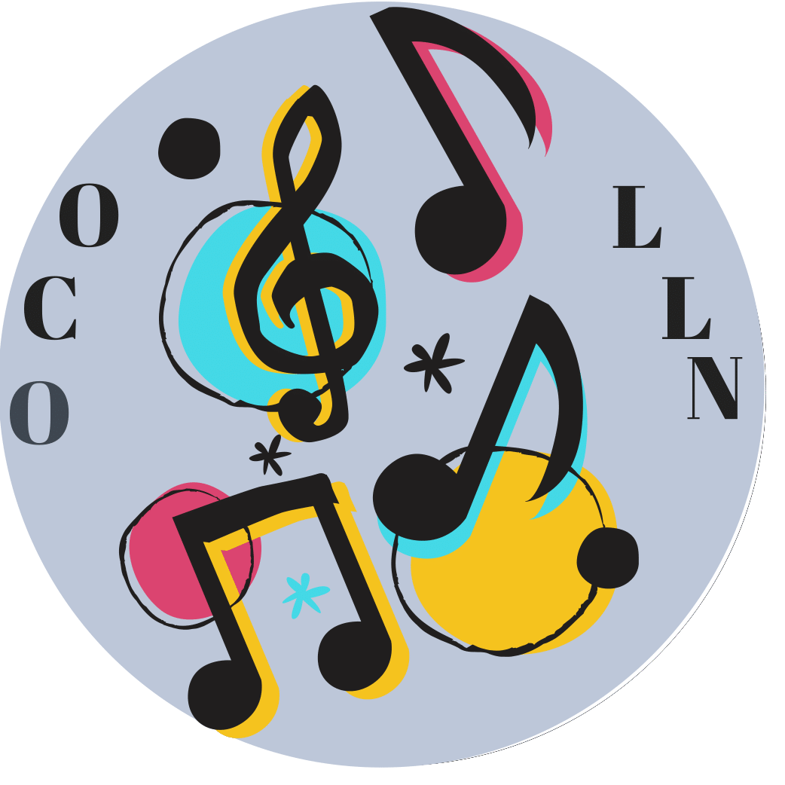
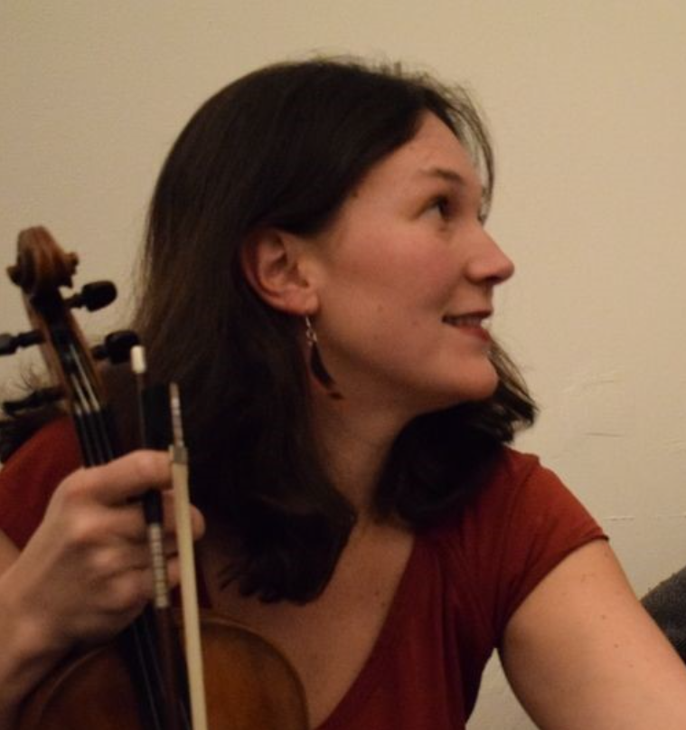
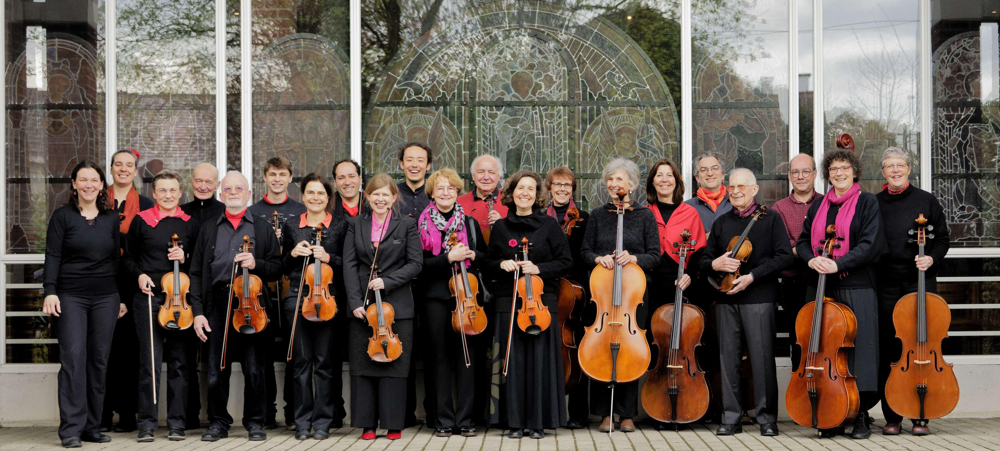
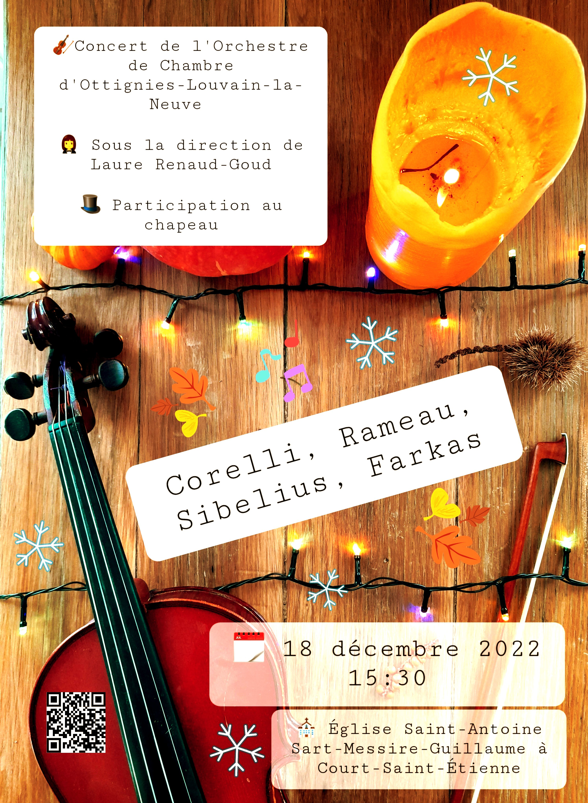
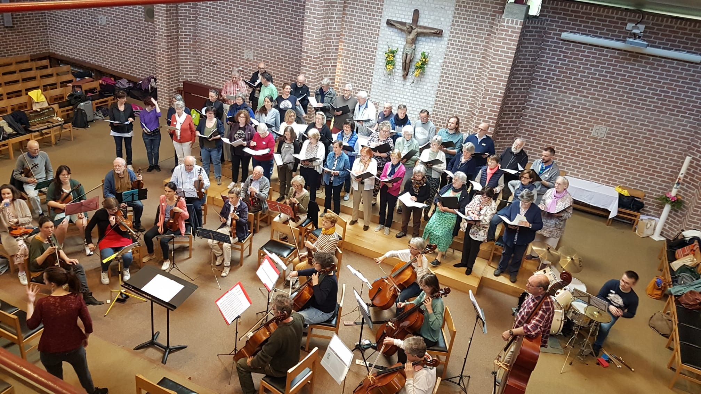
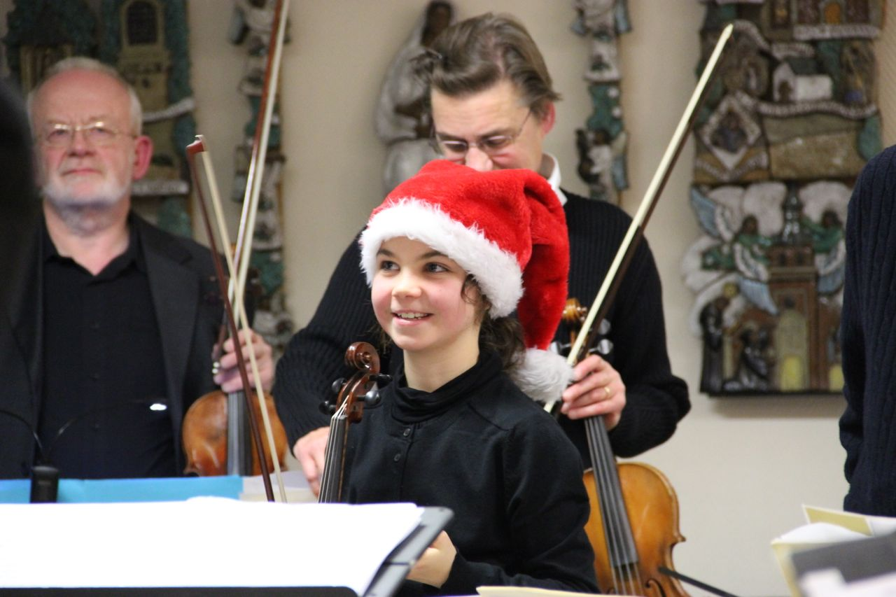
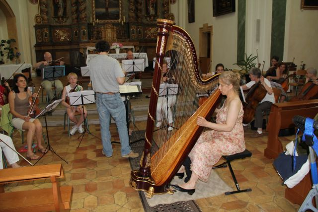
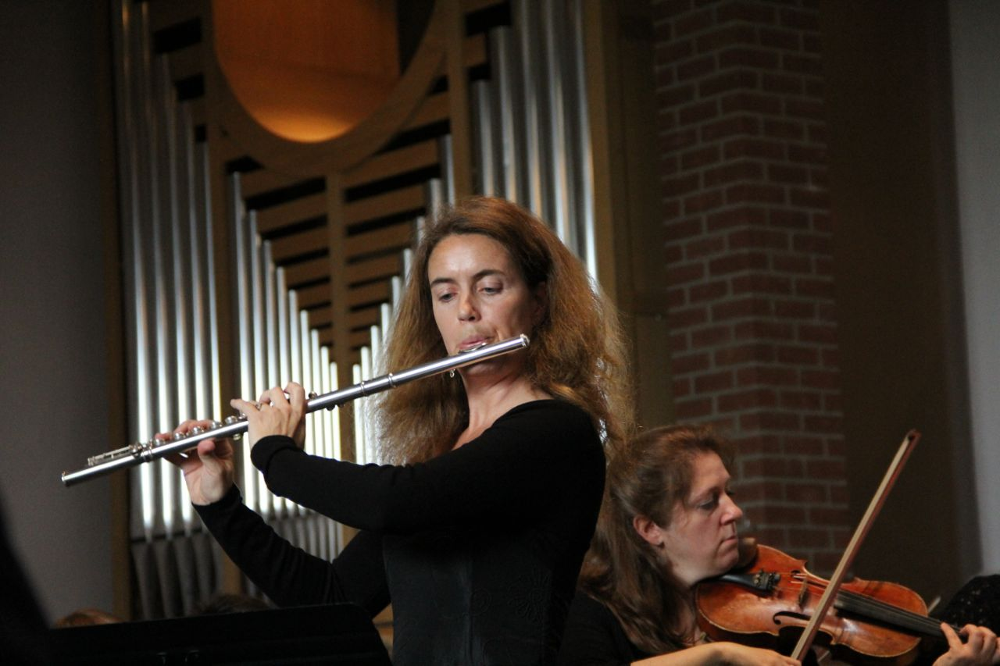

Actualités
📅 Save the Date !
Ne ratez pas notre prochain concert. Les détails (dates, programme) seront bientôt affichés ici.
Lieu habituel : Église Saint-François d'Assise, 1340 Ottignies-Louvain-la-Neuve

L'Orchestre
L'Orchestre de Chambre d'Ottignies - Louvain-la-Neuve a été fondé en 1980 par Mady DELOBBE et son époux, Georges DUYCKAERTS, tous deux musiciens professionnels.
Leur ambition était de permettre à des musiciens amateurs d'approfondir leur connaissance de la musique de chambre et de se perfectionner dans son interprétation. L'orchestre réunit une vingtaine de musiciens amateurs réguliers de bon niveau, tous animés d'un goût prononcé pour la musique classique et pour le plaisir de la jouer ensemble. Mady DELOBBE dirigea l'orchestre de 1980 à 2006.
À partir de 2006, l'orchestre a été dirigé par Jean-Gabriel RAELET, Konzertmeister de l'Opéra Royal de Wallonie et professeur de musique de chambre au Conservatoire de Liège.
Entre septembre et décembre 2017, l'orchestre a connu une période de transition sous la direction de Herbert BEIRENS.
À partir de janvier 2018, la direction de l'OCOLLN a été confiée à Olivier HABRAN, hautboïste et cor anglais solo à l'Opéra Royal de Wallonie.
Depuis sa création, l'OCOLLN a donné plus de 200 concerts, en Belgique comme à l'étranger, notamment en France, en Allemagne, en Suisse, en Hongrie et en Pologne. Son répertoire est essentiellement baroque. En 2010 et 2014, l'OCOLLN a obtenu la reconnaissance des Tournées Art et Vie.
L'OCOLLN joue régulièrement avec des musiciens solistes professionnels. Plusieurs de ses membres, qui se destinent à une carrière professionnelle, ont également la chance de jouer régulièrement comme soliste au sein de l'orchestre.
L'OCOLLN donne très souvent des concerts au profit d'œuvres caritatives, en reversant ses bénéfices au profit d'ASBL locales.
Président du Comité organisateur : Monsieur Paul TUMMERS
Président d'honneur : Dr Jean LEWALLE

La cheffe d'orchestre
Laure Renaud Goud
De formation classique, diplômée du conservatoire de Bruxelles, j’ai, en parallèle de mon parcours de musicienne classique, rapidement mis un pied dans le monde des musiques du monde et traditionnelles, de variété, de jazz et de musique improvisées, électroniques, mais aussi dans divers projets de théâtre et de spectacles vivants. J’ai la chance de pouvoir jouer dans divers ensembles allant du duo à l’orchestre symphonique.
Je suis passionnée depuis toujours par le jeu d’ensemble, véritable vecteur de cohésion sociale et par les brassages musicaux. Je n’ai de cesse de chercher et découvrir de nouvelles façons de pratiquer mon instrument à travers des styles variés. Je travaille actuellement un spectacle avec un artiste de mime et une pianiste circassienne dans un projet intitulé Mime-hic.
Le cours de violon
Pour moi, le cours de violon est un espace où l’on vit des moments musicaux et humains de qualité. L’enfant (ou l’adulte) vient s’y façonner en compagnie de son binôme, une base solide, une structure qui lui permettra ensuite de s’orienter vers le style de musique, la pratique qui lui parlera le mieux.
Chanter, danser, bouger, accueillir son instrument comme faisant partie de soi, expérimenter, se tromper, recommencer, improviser, inventer, jouer avec d’autres. Les multiples points d’entrées de cet apprentissage permettront à chaque élève de trouver son chemin.

Les Musiciens
(par ordre alphabétique)
Direction
- RENAUD-GOUD Laure
Violon 1
- DE VOLDER Nele
- GERARD Maxime
- GOMEZ KIEFFER Veronica
- LACHKAR Noémie
- LACZNY Roman
- SKELTON Marie
Violon 2
- DUPUIS Véronique
- FOUCHER Damien
- GALLEGO Valérie
- HERS Denis
- LOISELLE Ronny
- PIERARD Jacques
- SOETE Anne
Alto
- DE SPIEGELEIR Isaline
- HAYES Rachel
- XHAET Françoise
Violoncelle
- ARNOLD Béatrice
- DUCHAMPS Christine
- MUSIN Anne
- NEIRYNCK Isabelle
- VAN DE POELE Marie
- VIROT Matthieu
Contrebasse
- DEVILLEZ Vincent
Président
- TUMMERS Paul

Prochains Concerts & Archives
Retrouvez ici les dates de nos prochaines représentations ainsi que l'historique de nos concerts passés.



Galerie Photos
Découvrez les photos de l'orchestre lors de nos répétitions et représentations.




Contact
Pour toute demande d'information, projet de collaboration ou pour nous rejoindre :
✉️ Courriel : info@ocolln.be
📱 Suivez-nous également sur notre Page Facebook pour ne manquer aucune actualité.